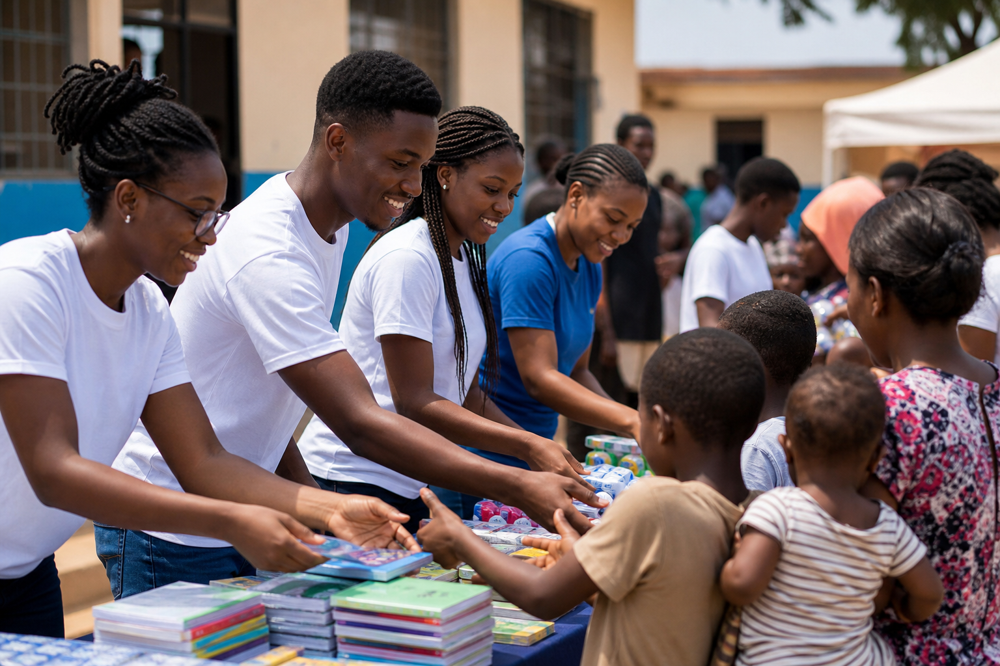

Youth IT Skills Training
Workshops that introduce computer literacy, digital confidence, coding fundamentals, and job-readiness habits.
Leadership profile
President of ZION Youth Development Initiative, educator, community builder, and technology-focused youth development advocate.
Leadership focus
Olakunle T. Obademi leads ZION Youth Development Initiative with a focus on education access, technology confidence, mentoring, and structured community service. His leadership connects local needs with practical programs that help young people develop skills, purpose, and responsibility.
With a background in Physics and Electronics and ongoing software development studies, he brings both education experience and digital capability to the organization’s program strategy.
Community priorities
Workshops that introduce computer literacy, digital confidence, coding fundamentals, and job-readiness habits.
Support for young people through guidance, accountability, communication practice, and project planning.

Volunteer-led support that connects learning with visible service and local community improvement.